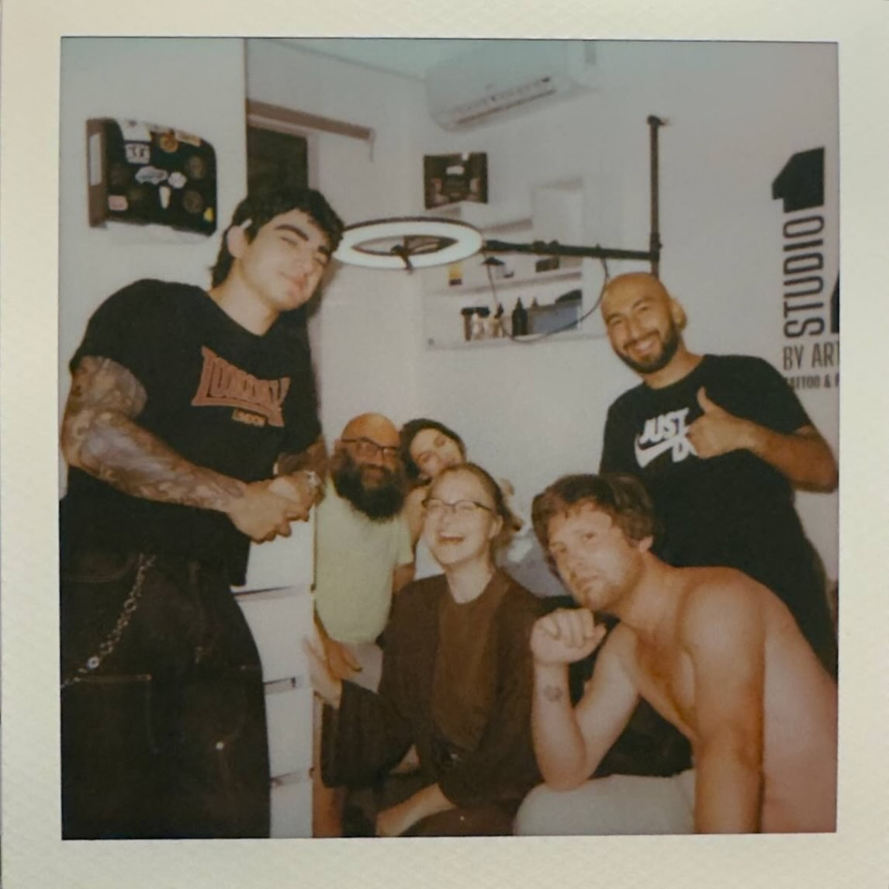
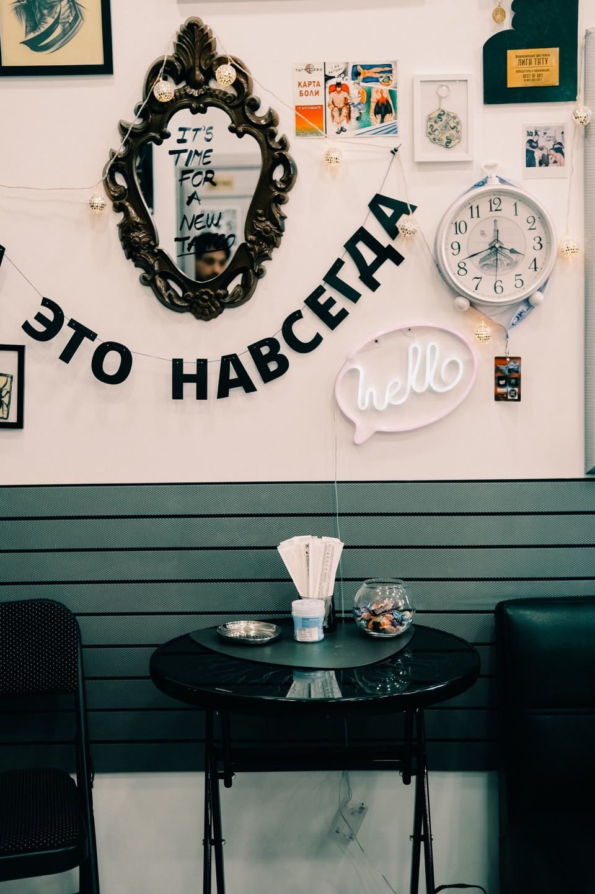
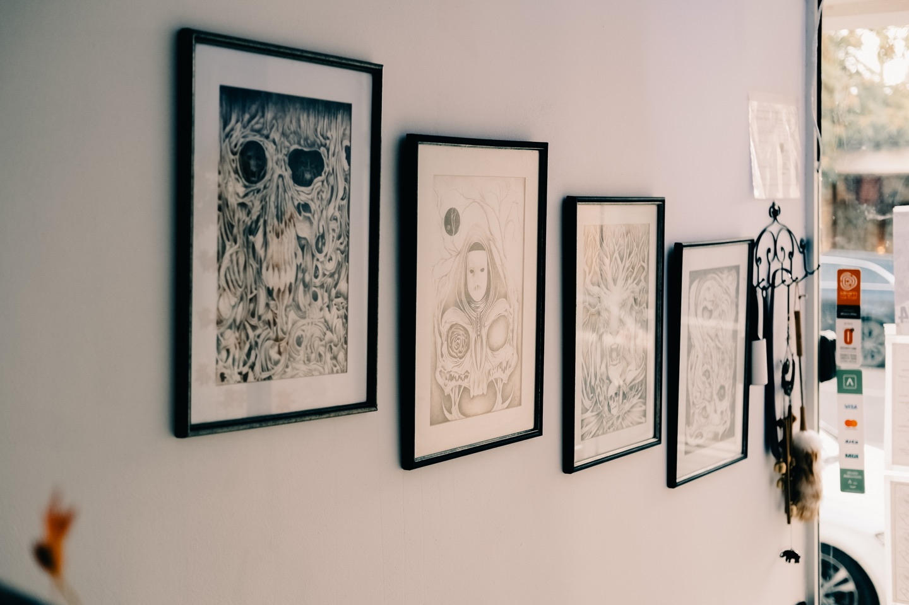
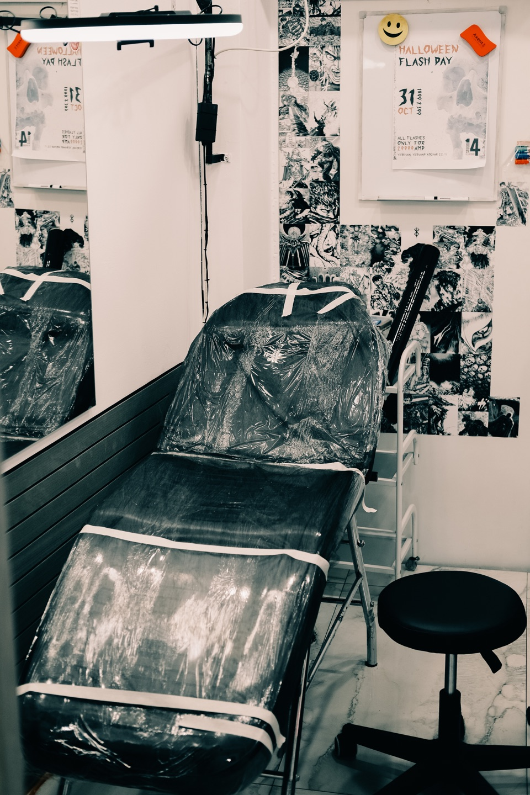
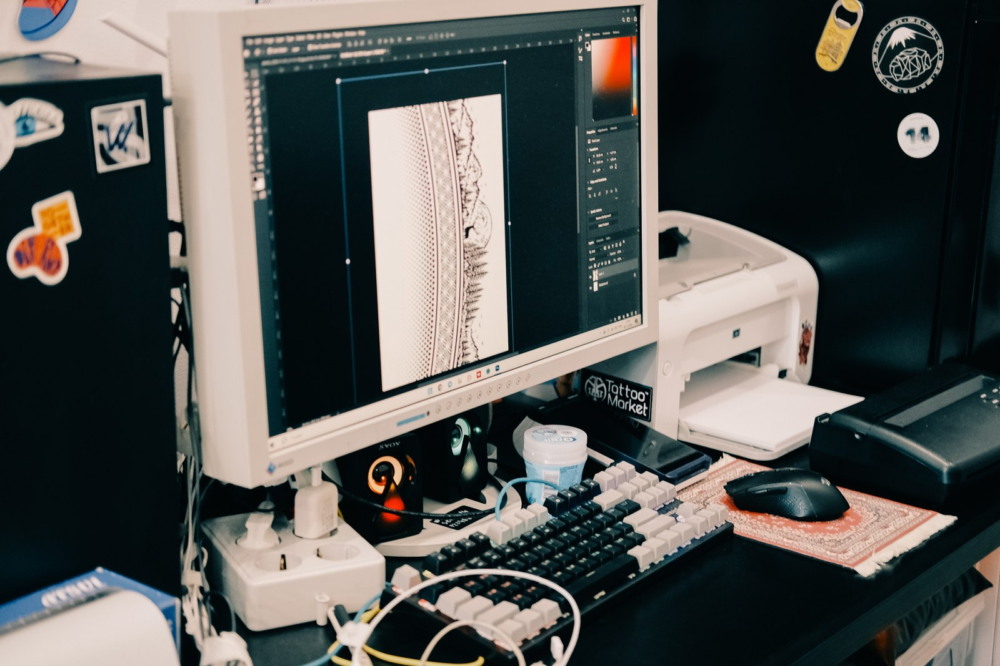
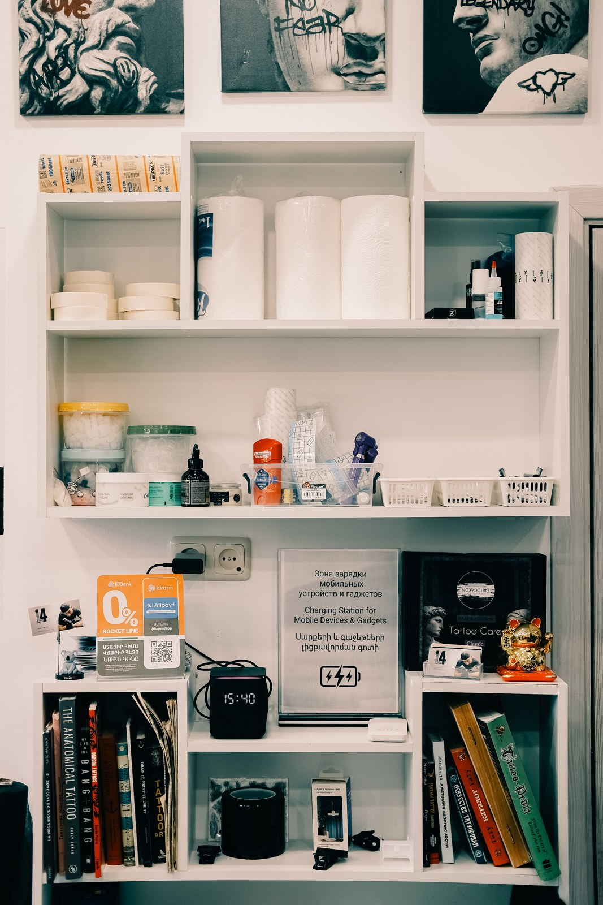
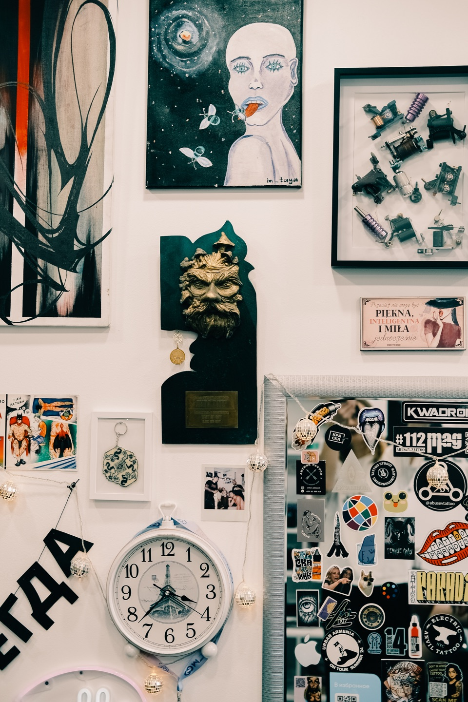
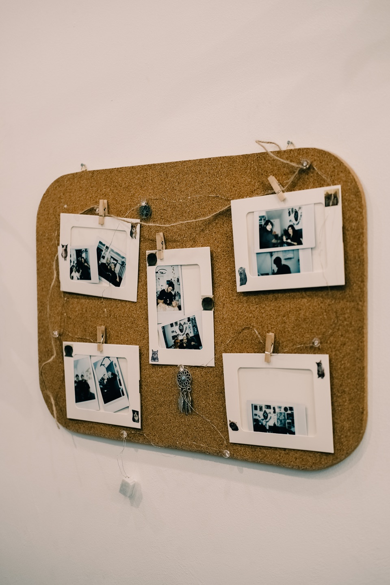
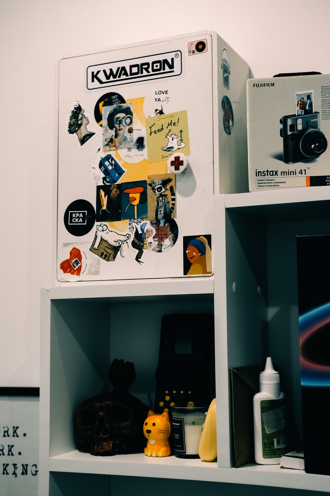
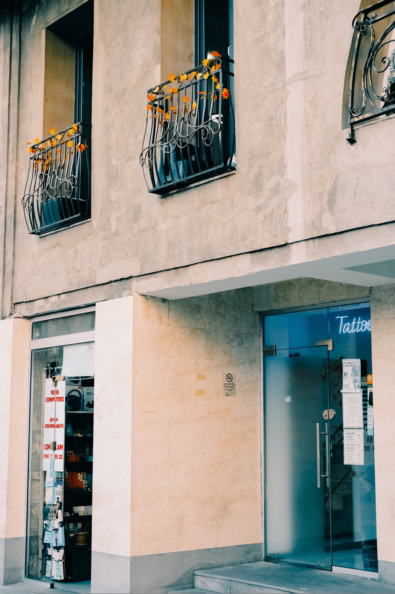

2019
Տնային ստուդիա
Արթուրը սկսել է տնային ստուդիայում։ Այստեղ են ստեղծվել առաջին աշխատանքներն ու պրոֆեսիոնալ տարածք բացելու գաղափարը։
01
Studio 14 by Arthur-ը դաջվածքի և փիրսինգի ստուդիա է Երևանում։ Արթուր Բարսեղյանն այն հիմնադրել է 2025 թվականին՝ հիմնվելով տեղացի և միջազգային մասնագետների հետ համատեղ աշխատանքի փորձի վրա։
Անկախ տարածք դաջվածքի, ուսուցման և փորձի փոխանակման համար՝ կապված Հայաստանի դաջվածքի մշակույթի հետ։

Աշխատանքային ստուդիա քաղաքի կենտրոնում։ Տարածք սեանսի, զրույցի և սկսելուց առաջ հանգիստ դադարի համար։



Տան սենյակից մինչև ընդհանուր ստուդիա․ նախագիծ, որը ձևավորվել է մասնագետների համատեղ աշխատանքի շնորհիվ։
Արթուրը սկսել է տնային ստուդիայում։ Այստեղ են ստեղծվել առաջին աշխատանքներն ու պրոֆեսիոնալ տարածք բացելու գաղափարը։
Նա սենյակ է վարձել տեղական բարբերշոփում և հաջորդ երկու տարիներին այնտեղ զարգացրել իր հմտությունները։
Underground-ը առաջին ստուդիան էր, որտեղ միաժամանակ կարող էին աշխատել մի քանի մասնագետներ։ Անվանումը կապված էր թե՛ նկուղային տարածքի, թե՛ այնտեղ աշխատող տեղացի անդերգրաունդ արվեստագետների հետ։ Հյուր մասնագետներն օգնեցին ստուդիային միանալ միջազգային համայնքին։
Studio 14-ը շարունակեց ընդհանուր տարածքի գաղափարը՝ միավորելով դաջվածքը, փիրսինգն ու ուսուցումը։ Դասընթացներն անցկացվում են հայերեն, ռուսերեն և անգլերեն։
Աշխատանքը սկսվում է գաղափարից, զրույցից և նախապատրաստումից։ Էսքիզը, տեղադրությունն ու աշխատատեղի պատրաստումը նույն գործընթացի մասերն են։


Արվեստ՝ պատերին, գրքեր՝ դարակներին և այստեղ եղած մարդկանց լուսանկարներ։ Փոքր մանրամասներ՝ հավաքված ժամանակի ընթացքում։



Studio 14-ը գտնվում է Երևանում՝ Երվանդ Քոչար 22/1 հասցեում։ Ինտերակտիվ քարտեզում կարող եք տեսնել ճշգրիտ վայրը և հարակից փողոցները։
